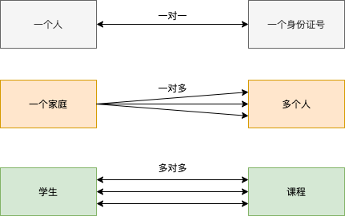

Django ORM – 多テーブルインスタンス
テーブル間の関係は以下の3種類に分けられます：
- 一対一: 一人につき1つの身分証番号が対応し、データフィールドは unique に設定します。
- 一対多: 1つの家庭に複数の人がいる場合、通常は外部キーで実現します。
- 多対多: 1人の学生が複数のコースを持ち、1つのコースに多くの学生がいる場合、通常は3番目のテーブルで関連付けを実現します。

モデルの作成
次に、複数テーブルのインスタンスを見てみましょう。
インスタンス
title = models.CharField(max_length=32)
price = models.DecimalField(max_digits=5, decimal_places=2)
pub_date = models.DateField()
publish = models.ForeignKey("Publish", on_delete=models.CASCADE)
authors = models.ManyToManyField("Author")
class Publish(models.Model):
name = models.CharField(max_length=32)
city = models.CharField(max_length=64)
email = models.EmailField()
class Author(models.Model):
name = models.CharField(max_length=32)
age = models.SmallIntegerField()
au_detail = models.OneToOneField("AuthorDetail", on_delete=models.CASCADE)
class AuthorDetail(models.Model):
gender_choices = (
(0, "女性"),
(1, "男性"),
(2, "非公開"),
)
gender = models.SmallIntegerField(choices=gender_choices)
tel = models.CharField(max_length=32)
addr = models.CharField(max_length=64)
birthday = models.DateField()
説明：
- 1、EmailField データ型はメール形式で、基盤は CharField を継承し、カプセル化されており、MySQL の varchar に相当します。
- 2、Django1.1 バージョンではカスケード削除は不要です：on_delete=models.CASCADE、Django2.2 では必要です。
- 3、通常はカスケード更新を設定する必要はありません。
- 4、外部キーは一対多の「多」側に設定します：models.ForeignKey("关联类名", on_delete=models.CASCADE)。
- 5、OneToOneField = ForeignKey(...，unique=True) で一対一を設定します。
- 6、モデルクラスに外部キーがある場合、データを作成する際は、まず外部キーが関連するモデルクラスのデータを作成する必要があります。そうしないと、外部キーを含むモデルクラスのデータを作成するときに、外部キーが関連するモデルクラスのデータが見つからなくなります。
テーブル構造
書籍テーブル Book：title、price、pub_date、publish（外部キー、多対一）、authors（多対多）
出版社テーブル Publish：name 、 city 、 email
著者テーブル Author：name、age、au_detail（一対一）
著者詳細テーブル AuthorDetail：gender 、 tel 、 addr 、 birthday
以下はテーブル関連の説明です：
データの挿入
MySQL で以下の SQL 挿入操作を実行します：
insert into app01_publish(name,city,email) values ("华山出版社", "华山", "hs@163.com"), ("明教出版社", "黑木崖", "mj@163.com")
# 先插入 authordetail 表中多数据
insert into app01_authordetail(gender,tel,addr,birthday) values (1,13432335433,"华山","1994-5-23"), (1,13943454554,"黑木崖","1961-8-13"), (0,13878934322,"黑木崖","1996-5-20")
# 再将数据插入 author，这样 author 才能找到 authordetail
insert into app01_author(name,age,au_detail_id) values ("令狐冲",25,1), ("任我行",58,2), ("任盈盈",23,3)

ORM - データの追加
一対多（外部キー ForeignKey）
方法1:オブジェクトを渡す形式で、戻り値のデータ型はオブジェクト、つまり書籍オブジェクトです。
手順：
- a. 出版社オブジェクトを取得
- b. 書籍の出版社属性 pulish に出版社オブジェクトを渡す
app01/views.py ファイルコード：
# 出版社オブジェクトを取得
pub_obj = models.Publish.objects.filter(pk=1).first()
# 書籍の出版社属性 publish に出版社オブジェクトを渡す
book = models.Book.objects.create(title="菜鸟教程", price=200, pub_date="2010-10-10", publish=pub_obj)
print(book, type(book))
return HttpResponse(book)

方法2: オブジェクトの id を渡す形式（渡されるデータは通常 id なので、オブジェクトの id を渡すのが一般的です）。
一対多において、外部キー属性を設定するクラス（多側のテーブル）では、MySQL に表示されるフィールド名は次のとおりです：外部キー属性名_id。
戻り値のデータ型はオブジェクト、つまり書籍オブジェクトです。
手順：
- a. 出版社オブジェクトの id を取得
- b. 書籍の関連出版社フィールド pulish_id に出版社オブジェクトの id を渡す
app01/views.py ファイルコード：
# 出版社オブジェクトを取得
pub_obj = models.Publish.objects.filter(pk=1).first()
# 出版社オブジェクトの id を取得
pk = pub_obj.pk
# 書籍の関連出版社フィールド publish_id に出版社オブジェクトの id を渡す
book = models.Book.objects.create(title="冲灵剑法", price=100, pub_date="2004-04-04", publish_id=pk)
print(book, type(book))
return HttpResponse(book)

多対多（ManyToManyField）：3番目のリレーションテーブルにデータを追加
方法1:オブジェクトを渡す形式で、戻り値はありません。
手順：
- a. 著者オブジェクトを取得
- b. 書籍オブジェクトを取得
- c. 書籍オブジェクトの authors 属性に add メソッドで著者オブジェクトを渡す
app01/views.py ファイルコード：
# 著者オブジェクトを取得
chong = models.Author.objects.filter(name="令狐冲").first()
ying = models.Author.objects.filter(name="任盈盈").first()
# 書籍オブジェクトを取得
book = models.Book.objects.filter(title="菜鸟教程").first()
# 書籍オブジェクトの authors 属性に add メソッドで著者オブジェクトを渡す
book.authors.add(chong, ying)
return HttpResponse(book)

方法2:オブジェクトの id を渡す形式で、戻り値はありません。
手順：
- a. 著者オブジェクトの id を取得
- b. 書籍オブジェクトを取得
- c. 書籍オブジェクトの authors 属性に add メソッドで著者オブジェクトの id を渡す
app01/views.py ファイルコード：
# 著者オブジェクトを取得
chong = models.Author.objects.filter(name="令狐冲").first()
# 著者オブジェクトの id を取得
pk = chong.pk
# 書籍オブジェクトを取得
book = models.Book.objects.filter(title="冲灵剑法").first()
# 書籍オブジェクトの authors 属性に add メソッドで著者オブジェクトの id を渡す
book.authors.add(pk)

関連マネージャー（オブジェクト呼び出し）
前提条件：
- 多対多（双方向ともに関連マネージャーを持つ）
- 一対多（多側のクラスのオブジェクトだけが関連マネージャーを持ち、つまり逆方向のみ）
構文形式：
正向：属性名 反向：小写类名加 _set
注意：一対多は逆方向のみ可能
よく使うメソッド：
add()：多対多で使用し、指定したモデルオブジェクトを関連オブジェクトセット（リレーションテーブル）に追加します。
注意：add() は一対多（つまり外部キー）では、オブジェクト（*QuerySet データ型）のみ渡すことができ、id（*[id リスト]）は渡せません。
*[ ]の使用：
# 方法1：オブジェクトを渡すauthor_list = models.Author.objects.filter(id__gt=2)
book_obj.authors.add(*author_list) # id が 2 より大きい著者オブジェクトをこの本の著者セットに追加します
# 方法2：オブジェクトの id を渡す
book_obj.authors.add(*[1,3]) # id=1 と id=3 の著者オブジェクトをこの本の著者セットに追加します
return HttpResponse("ok")

逆方向：小文字のテーブル名_set
book = models.Book.objects.filter(title="冲灵剑法").first()
ying.book_set.add(book)
return HttpResponse("ok")

create()：新しいオブジェクトを作成し、同時に関連オブジェクトセットに追加します。
新しく作成されたオブジェクトを返します。
wo = models.Author.objects.filter(name="任我行").first()
book = wo.book_set.create(title="吸星大法", price=300, pub_date="1999-9-19", publish=pub)
print(book, type(book))
return HttpResponse("ok")

remove()：関連オブジェクトセットから指定されたモデルオブジェクトを削除します。
ForeignKey オブジェクトの場合、このメソッドは null=True（空にできる）のときのみ存在し、戻り値はありません。
インスタンス
book_obj = models.Book.objects.get(id=11)
author_obj.book_set.remove(book_obj)
return HttpResponse("ok")

clear()：関連オブジェクトセットからすべてのオブジェクトを削除し、関連付けを削除しますが、オブジェクト自体は削除しません。
ForeignKey オブジェクトの場合、このメソッドは null=True（空にできる）のときのみ存在します。
戻り値はありません。
book = models.Book.objects.filter(title="菜鸟教程").first()
book.authors.clear()
ORM クエリ
オブジェクトベースのクロステーブルクエリ。
正向：属性名称 反向：小写类名_set
一対多
主キーが 1 の書籍の出版社がある都市をクエリします（順方向）。
インスタンス
res = book.publish.city
print(res, type(res))
return HttpResponse("ok")

明教出版社が出版した書籍名を検索する（逆方向）。
逆方向：オブジェクト.小文字クラス名_set(pub.book_set)関連するテーブル（書籍テーブル）にジャンプできます。
pub.book_set.all()：書籍テーブルのすべての書籍オブジェクトを取得し、QuerySet内で繰り返して個々の書籍オブジェクトを取り出します。
インスタンス
res = pub.book_set.all()
for i in res:
print(i.title)
return HttpResponse("ok")

一対一
令狐冲の電話番号を検索する（正方向）
正方向：オブジェクト.属性 (author.au_detail) で関連するテーブル（著者詳細テーブル）にジャンプできます。
インスタンス
res = author.au_detail.tel
print(res, type(res))
return HttpResponse("ok")

住所が黑木崖にあるすべての著者の氏名を検索する（逆方向）。
一対一の逆方向では、次を使用します。オブジェクト.小文字クラス名それだけでよく、_set を付ける必要はありません。
逆方向：オブジェクト.小文字クラス名(addr.author)で関連するテーブル（著者テーブル）にジャンプできます。
インスタンス
res = addr.author.name
print(res, type(res))
return HttpResponse("ok")

多対多
菜鸟教程のすべての著者の名前と携帯電話番号（正方向）。
正方向：オブジェクト.属性(book.authors)関連するテーブル（著者テーブル）にジャンプできます。
著者テーブルには著者の電話番号がないため、再度次を使用します。オブジェクト.属性(i.au_detail)関連するテーブル（著者詳細テーブル）にジャンプします。
インスタンス
res = book.authors.all()
for i in res:
print(i.name, i.au_detail.tel)
return HttpResponse("ok")

任我行が出版したすべての書籍の名前を検索する（逆方向）。
インスタンス
res = author.book_set.all()
for i in res:
print(i.title)
return HttpResponse("ok")

ダブルアンダースコアに基づくクロステーブルクエリ
順方向：属性名__跨テーブルの属性名 逆方向：小文字のクラス名__跨テーブルの属性名
一対多
菜鳥出版社が出版したすべての書籍の名前と価格を検索する。
インスタンス

逆方向：小文字クラス名__関連テーブルの属性名（book__title，book__price）テーブル間でデータを取得します。
インスタンス
return HttpResponse("ok")

多対多
任我行が出版したすべての書籍の名前を検索する。
正方向：属性名__関連テーブルの属性名(authors__name) を使用してテーブル間でデータを取得します。
res = models.Book.objects.filter(authors__name="任我行").values_list("title")
逆方向：小文字クラス名__関連テーブルの属性名（book__title） を使用してテーブル間でデータを取得します。
res = models.Author.objects.filter(name="任我行").values_list("book__title")

一対一
任我行の携帯電話番号を検索する。
正方向：属性名__関連テーブルの属性名(au_detail__tel)テーブル間でデータを取得します。
res = models.Author.objects.filter(name="任我行").values_list("au_detail__tel")

逆方向：小文字クラス名__関連テーブルの属性名（author__name）テーブル間でデータを取得します。
res = models.AuthorDetail.objects.filter(author__name="任我行").values_list("tel")